File list
This special page shows all uploaded files.
{kind=link}
{kind=link}
| Date | Name | Thumbnail | Size | User | Description | Versions |
|---|---|---|---|---|---|---|
| 15:39, 5 January 2021 | 172Cards06.png (file) |  |
43 KB | Zrzovous | 1 | |
| 15:39, 5 January 2021 | 172Cards07.png (file) | 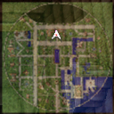 | 47 KB | Zrzovous | 1 | |
| 15:39, 5 January 2021 | 172Cards08.png (file) | 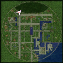 | 44 KB | Zrzovous | 1 | |
| 15:39, 5 January 2021 | 172Cards09.png (file) | 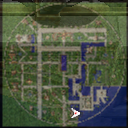 | 46 KB | Zrzovous | 1 | |
| 15:39, 5 January 2021 | 172Cards10.png (file) |  |
47 KB | Zrzovous | 1 | |
| 22:12, 1 October 2020 | 172 01.png (file) | 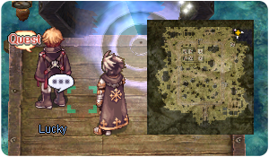 | 124 KB | Tokeiburu | 1 | |
| 22:27, 1 October 2020 | 172 02.png (file) |  |
117 KB | Tokeiburu | 1 | |
| 22:27, 1 October 2020 | 172 03.png (file) |  |
93 KB | Tokeiburu | 1 | |
| 22:35, 1 October 2020 | 172 04.png (file) | 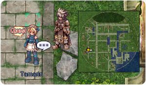 | 137 KB | Tokeiburu | 1 | |
| 15:30, 2 October 2020 | 172 05.png (file) |  |
101 KB | Tokeiburu | 1 | |
| 15:31, 2 October 2020 | 172 06.png (file) |  |
63 KB | Tokeiburu | 1 | |
| 15:49, 2 October 2020 | 172 07.png (file) | 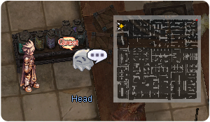 | 102 KB | Tokeiburu | 1 | |
| 15:53, 2 October 2020 | 172 08.png (file) |  |
101 KB | Tokeiburu | 1 | |
| 15:57, 2 October 2020 | 172 09.png (file) | 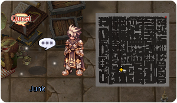 | 103 KB | Tokeiburu | 1 | |
| 16:21, 2 October 2020 | 172 10.png (file) | 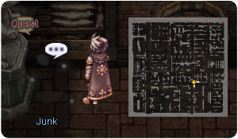 | 97 KB | Tokeiburu | 1 | |
| 16:40, 2 October 2020 | 172 11.png (file) | 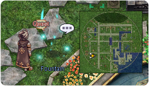 | 139 KB | Tokeiburu | 1 | |
| 16:49, 2 October 2020 | 172 12.png (file) |  |
133 KB | Tokeiburu | 1 | |
| 16:49, 2 October 2020 | 172 13.png (file) |  |
123 KB | Tokeiburu | 1 | |
| 17:13, 2 October 2020 | 172 14.png (file) |  |
125 KB | Tokeiburu | 1 | |
| 17:16, 2 October 2020 | 172 15.png (file) | 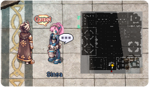 | 111 KB | Tokeiburu | 1 | |
| 18:07, 2 October 2020 | 172 16.png (file) |  |
104 KB | Tokeiburu | 1 | |
| 18:21, 2 October 2020 | 172 17.png (file) |  |
82 KB | Tokeiburu | 1 | |
| 19:40, 2 October 2020 | 172 18.png (file) |  |
97 KB | Tokeiburu | 1 | |
| 19:40, 2 October 2020 | 172 20.png (file) | 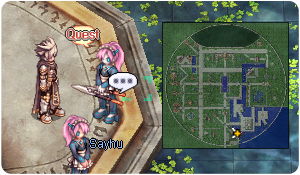 | 130 KB | Tokeiburu | 1 | |
| 19:40, 2 October 2020 | 172 21.png (file) | 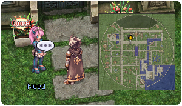 | 136 KB | Tokeiburu | 1 | |
| 21:35, 2 October 2020 | 172 22.png (file) | 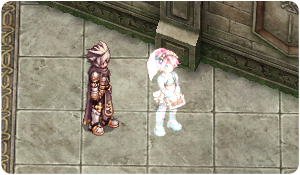 | 124 KB | Tokeiburu | 1 | |
| 22:16, 2 October 2020 | 172 23.png (file) |  |
136 KB | Tokeiburu | 1 | |
| 22:26, 2 October 2020 | 172 24.png (file) |  |
140 KB | Tokeiburu | 1 | |
| 22:26, 2 October 2020 | 172 25.png (file) |  |
136 KB | Tokeiburu | 1 | |
| 23:11, 2 October 2020 | 172 26.png (file) | 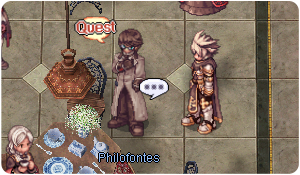 | 127 KB | Tokeiburu | 1 | |
| 23:11, 2 October 2020 | 172 27.png (file) |  |
140 KB | Tokeiburu | 1 | |
| 23:11, 2 October 2020 | 172 28.png (file) |  |
131 KB | Tokeiburu | 1 | |
| 23:11, 2 October 2020 | 172 29.png (file) | 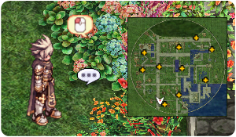 | 143 KB | Tokeiburu | 1 | |
| 23:17, 2 October 2020 | 172 30.png (file) | 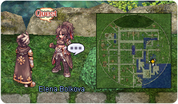 | 137 KB | Tokeiburu | 1 | |
| 23:56, 2 October 2020 | 172 31.png (file) |  |
120 KB | Tokeiburu | 1 | |
| 23:56, 2 October 2020 | 172 32.png (file) | 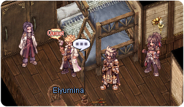 | 130 KB | Tokeiburu | 1 | |
| 23:56, 2 October 2020 | 172 33.png (file) |  |
136 KB | Tokeiburu | 1 | |
| 17:22, 9 January 2021 | 172chess01.png (file) |  |
2.06 MB | Zrzovous | 1 | |
| 17:22, 9 January 2021 | 172chess02.png (file) | 2.03 MB | Zrzovous | 1 | ||
| 17:22, 9 January 2021 | 172chess03.png (file) | 2.27 MB | Zrzovous | 1 | ||
| 15:42, 3 May 2017 | 17611.png (file) | 8 KB | Tokeiburu | 1 | ||
| 21:19, 20 March 2017 | 1771.gif (file) |  |
6 KB | AloeLeaflet | 1 | |
| 21:19, 20 March 2017 | 1772.gif (file) |  |
6 KB | AloeLeaflet | 1 | |
| 15:23, 6 March 2019 | 1776.gif (file) |  |
6 KB | Alice | 1 | |
| 12:22, 23 November 2018 | 1777.gif (file) |  |
111 KB | AloeLeaflet | 1 | |
| 12:21, 23 November 2018 | 1778.gif (file) | 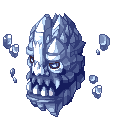 | 17 KB | AloeLeaflet | 1 | |
| 12:22, 23 November 2018 | 1781.gif (file) |  |
4 KB | AloeLeaflet | 1 | |
| 15:23, 6 March 2019 | 1782.gif (file) |  |
7 KB | Alice | 1 | |
| 15:23, 6 March 2019 | 1784.gif (file) |  |
10 KB | Alice | 1 | |
| 12:22, 23 November 2018 | 1789.gif (file) |  |
135 bytes | AloeLeaflet | 1 |
{kind=link}
{kind=link}
{kind=link}
{kind=link}
{kind=link}
{kind=link}
{kind=link}
{kind=link}
{kind=link}
{kind=link}
{kind=link}
{kind=link}
{kind=link}
{kind=link}
{kind=link}
{kind=link}
{kind=link}
{kind=link}